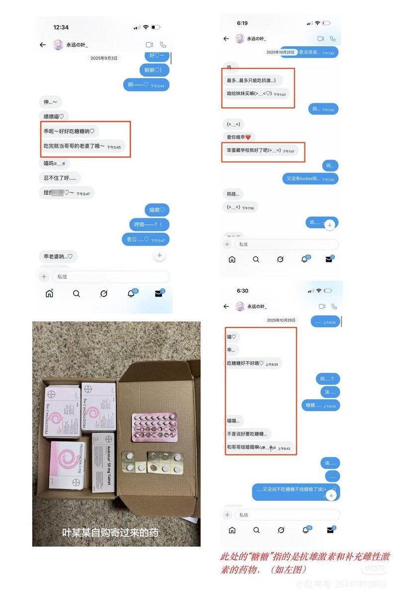

北雁冬翼（simone luxem）🏳️⚧️🏳️🌈🔬
@Simone_Luxem
@hagishigure @sreP0W3K4NNKRf2 好，那就切实验证了我的猜想和潜在的反应并非空穴来风了，并依次我给出自己的态度：放屁！去死吧…
无论其语言是多么的冠冕堂皇，这样的话实际上背后所掩盖的真相是怎样的，我认为都是相当清晰的了：孩子一定得是被“诱导”的，一定得是被“带坏”的，一定得是错误的产物，一定得是不出于自己的自由意志的

時璃風医詩🌈🏳️🌈
@hagishigure
@Simone_Luxem @sreP0W3K4NNKRf2 据说是chaser养小药娘暴露了。 https://t.co/C5UD0FXUeM